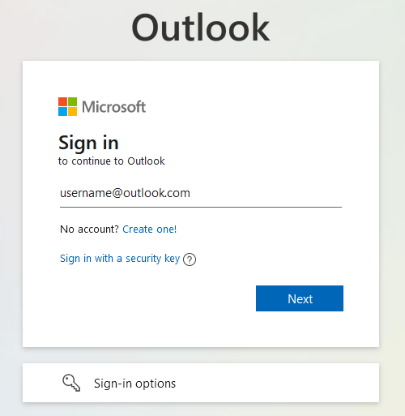
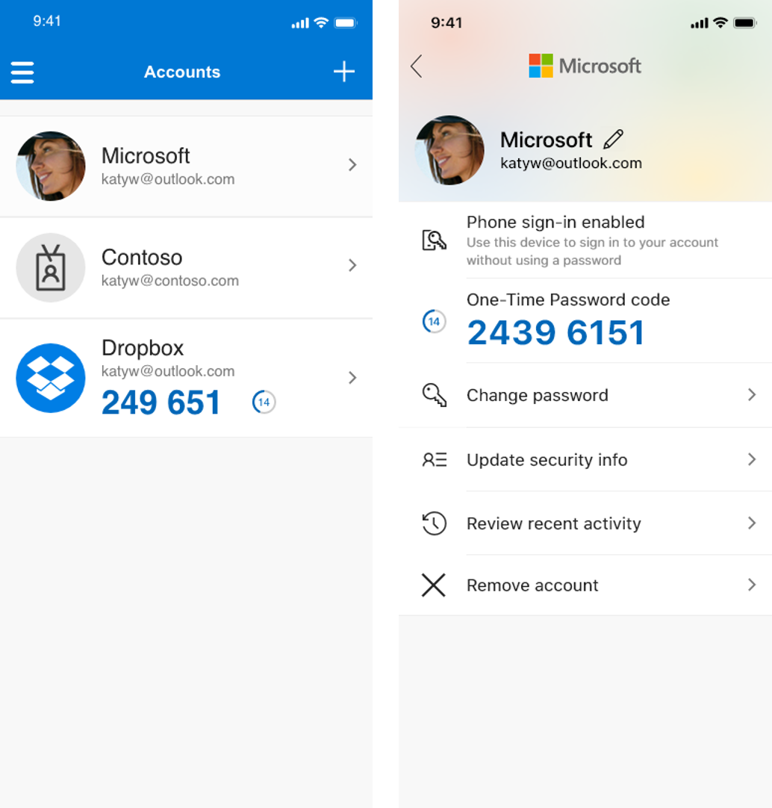

To log onto Outlook, enter your teacher email. It is formated as: FIRSTNAME+LASTNAME@teachers.wlcsd.org, then enter your password. Your Outlook login information should be similar as the login information used to get into the actual laptop.

You will need an authenticator code in order to log in. Set up the Microsoft Authenticator app on your phone with your teacher email.

Forgot Your Password
To reset your Outlook password, contact someone in the IT department.
Lost Access To Old Authenticator
If you lost access to your authenticator and are unable to access Outlook at all, please contact someone in the IT department.
If switch phones and want to log into Outlook on the new phone, you will need your old authenticator code in order to set up the authenticator on your new phone. This means that if you have lost access to your old phone, and thus authenticator, you will not be able to log in again because you lost your access to your authenticator codes.
Here is a tutorial on how to remove the old authenticator. The process can be complicated. By going to your microsoft security settings you might be able to give yourself a onetime access code you can use to log into your mobile device.